The world around us is fascinating and very interesting. Many times we have discovered things that expand our horizons and our way of thinking. Each and every time that we see something that is new, strange or unusual we should pay attention to it. That is how we grow.
Only fools try to fit everything into a narrow prepackaged reality that explains everything away in a nice neat wrapper.
When we encounter “impossible” realities, we actually really need to pay attention to what we discover. For the knowledge of what we find, and the resulting theories can greatly expand and increase our knowledge of the world around us. We need to take a good hard look at OOPARTS and study them in detail.
With this in mind, let’s take some time to investigate a seemingly impossible item; a brass hand-bell found within a lump of coal some 300 million years old. Let’s look at it in some detail so that we can try to figure out a little bit more about our life and the history that surrounds us…
Introduction
In 1944, world war II was not yet over. The Germans were taking a beating in Russia and the Japanese armies were still strong and fighting. Back home, people rationed their food, and saved up “for the war effort”. In a small town in West Virginia, a ten year old boy, named Newton Anderson dropped a lump of coal when he was getting it from his basement. (In those days, homes were heated by coal furnaces in the basements, and they were fed from a “coal chute” nearby.) The chunk of coal broke in half. To his surprise he found that it contained an object inside. The object was a diminutive sized hand-bell made out of bronze.
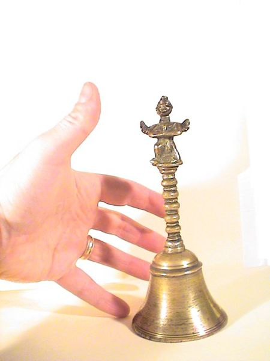
Where Found
The bituminous coal that was mined near his house in Upshur County West Virginia. The mine where it was obtained has been dated by geologists to be about 300 million years old.
Age
"...300 million years ago and was a funky time that saw relatives of club mosses grow to the size of trees while insects also reached comparatively gigantic proportions due to the higher-than-modern oxygen concentration." -Arstechnica
We are forced to date this object from the coal that it was reported to come from. There just simply isn’t any other way to date this object. We must rely on the reported statements from the discoverer of the hand-bell.
Coal is formed by the compression and decay of plant life. Under heat and pressure, due to the typical weight of tons of earth, plant residue squeezes together and forms coal. Obviously, the bell was buried inside a huge pile of organic plant life and over the millions of years found itself encased inside a block of coal.
Coal fields exist all through West Virginia and Pennsylvania.
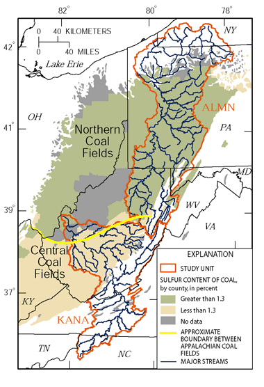
A study of the region clearly points to the coal being of “Pennsylvanian” geologic structure. This does not mean that the rock grew some legs and walked South from Pennsylvania. Rather it refers to the date when the primary geologic landforms were created.
Here is a map of the geology of West Virgina. Obviously, Upshur county is smack dab in the middle of Pennsylvanian geology.
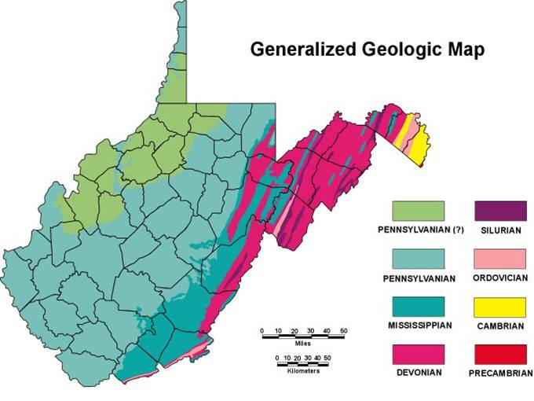
Here is what Britannica has to say about this time period;
Pennsylvanian Subperiod, second major interval of the Carboniferous Period, lasting from 323.2 million to 298.9 million years ago. The Pennsylvanian is recognized as a time of significant advance and retreat by shallow seas. Many nonmarine areas near the Equator became coal swamps during the Pennsylvanian. -Britannica.com
This was an interesting time for certain.
- 323.2 to 298.9 million years ago.
- The retreat of shallow seas enabled lush plant growth.
- The geographic area was on the equator during this time.
- Those areas above the water became the coal fields that we mine today.
- This was a period of time long before dinosaurs, let alone humans.
- There were some small lizards, but for the most part the dominant (land-based) lifeforms were insects.
The major forms of life at this time were the arthropods (insects). Due to the high levels of oxygen, arthropods were far larger than modern ones. Arthropleura, a giant millipede relative, was a common sight and the giant dragonfly Meganeura "flew the skies". -Wikipedia
The Dominant Life
During this period of time, the world was warm, lush and semi-tropical. The plant life was simple, with ferns and other plants that looked like bamboo strands. The planet had a far higher percentage of oxygen in the air than what we have today. This larger quantity of oxygen permitted the creatures to grow to enormous size.
The reason all that oxygen was present, by the way, is the vast burial of organic material before it could be eaten by oxygen-respiring organisms. And while oxygen rose, atmospheric CO2 fell, eventually leading to glacial conditions. It was a massive carbon-cycle experiment that mirrored our current one but with carbon moving in the opposite direction, from the atmosphere into the ground, where it formed the coal we’re now burning into atmospheric CO2. -Why was most of the Earth's coal made all at once?
Personally, I would be afraid to live in this kind of environment. Can you imagine the mosquitoes, or cockroaches? Heck, a dragonfly would be able to bite off a thumb-sized chunk of skin off your arm! Yikes!
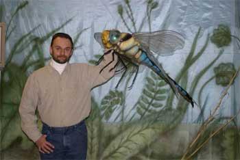
All the insects grew to enormous size. In fact, some that we know of were larger than many mammals. As in all cases, there are probably instances where there were much, much larger insects that we are unaware of simply because it is difficult to reconstruct history from invertebrates. However, what we do know, is indeed quite frightening!
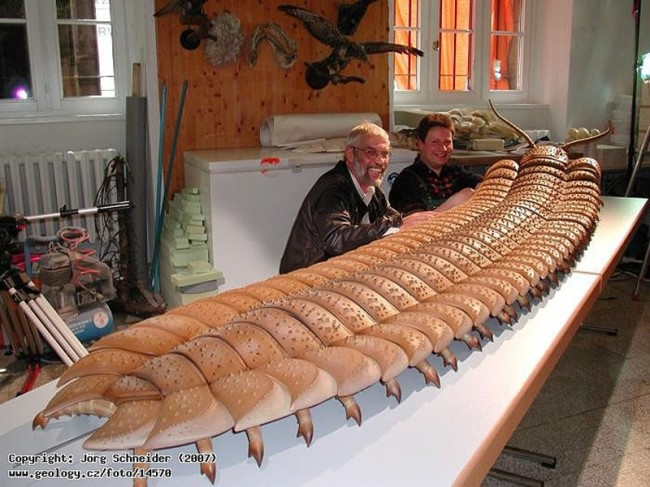
The World was Quite Different
This was a long time ago. The earth was covered with water, and the planet was blessed with an enormous amount of oxygen and hot tropical temperatures.
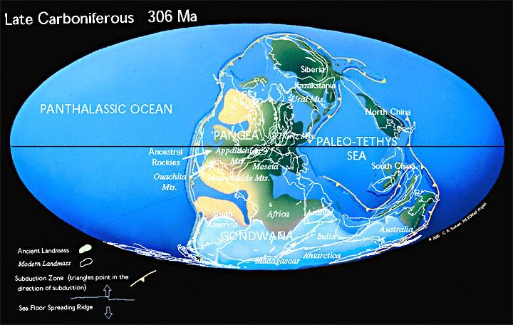
The planet was mostly covered by large shallow oceans. The temperature was hot, moist and tropical (in the area where the bell was discovered). This was a period where there were all kinds of interesting sea life, but most land based life were yet to evolve. There were plants, and there were insects. There were some small reptiles, and snails. However, mammals were nonexistent.
It was a time that looked quite different than today.
So, what did the earth look like? Yes it was different, it was warmer and the plants were quite different. Well, for starters, it smelled different. The plants didn’t apparently get much of a chance to decay like they do today, so the huge forests tended to pile up into a landscape of mush. There wasn’t any kind of forest floor like we see today. Instead it would be a soft and very thick bed of debris that would pile on top of each other over years.
The forest floor more realistically resembled a thick brush pile of leaves and plants that more resembled bamboo and ferns more than anything else. Beneath this pile was a thick and black oozy moist pile of sludge that was nearly impossible to walk through. Above was a thick canopy of fern leaves that towered high up into the sky.
So the reader should understand that the wooded forests and green areas more likely resembled a bog more than anything else. Everything was thick, moist and dank. Here would be swampy lands on the floors of the huge forests that populated the landmasses.
There would be sunrises, and sunsets, of course, but the appearance of them would vary by the different atmospheric composition. It might have been a little hazier on the horizon, but perhaps clearer when you looked upwards. It would have been a very, and I do mean, very different environment.
Thus the Mystery
How can a bell be manufactured, and used at a time when the dominant lifeform on Earth were insects?
Thus we have an OOPART. It is an object that cannot be explained using our current understanding of history, science or mankind.
We are then faced with confronting some uncomfortable possibilities, one or more of the following should be considered;
- The way we date things is wrong.
- Our understanding of history and evolution is wrong.
- Our assumptions on mankind and technology are wrong.
- The assumption that man is the only and first intelligent life on earth is wrong.
- The idea that insects were the highest most advanced form of life during the Pennsylvanian era is wrong.
Perhaps there are other solutions. These other solutions make us question everything that we know, and think that we know.
- Is time travel possible?
- What about dimensional travel, and possible cross-dimensional migration?
Now, there are always theories that might mitigate some of these ugly confrontations somewhat. For instance, we might believe that extraterrestrials transported non-native intelligent life to populate the earth during the Pennsylvanian era. Or, perhaps, we have underestimated just how intelligent large sized insects could become.
Regardless as to what theories one presents, we must confront the fact that the world, as we expect it to be, is all together something else entirely.
Item Description
With that being stated, maybe the object itself might shed some light on the mystery.
The reader should notice the overall construction of this object. Note that the handle grip on the bell does not match that of a contemporaneous hand. Instead, it is much smaller.
If one were to assume that, the handle grip was to match that of the hand of the user, than that would support the contention of a diminutive sized humanoid. One that was probably not much larger than a meter tall. Thus, we make the first discovery.
The user(s) of the bell were of small size and had small sized hands.
The reader should also note the figure at the hilt of the bell. This figure is depicted having two arms clasped together, and two legs spread apart (on one knee like a protesting football player). Note that the figure has what appear to be wings. The figure is dressed in a robe like garment that flows all the way to the ankles and feet.
How can this be? As we know, at this time, the only creatures that had wings were insects. There were no birds yet. There were no feathers.
"The evolution of birds began in the Jurassic Period, with the earliest birds derived from a clade of theropoda dinosaurs named Paraves." -Wikipedia
Since the Jurassic period didn’t get started until 200 million years ago, this strange figurine and bell was manufactured some 100 million years before the first appearance of birds with feathers. At this time, the ONLY creatures that had wings were insects. Thus, we make our second important discovery;
The figurine possibly depicts an intelligent insect. As there were no birds, no feathers, and no wings at the time the bell was manufactured.
Why would someone want to make a brass hand-bell with an insect figurine on the handle? Either the person who made the bell was an insect themselves, and thus created a likeness of their ilk, or they “worshipped” or “honored” a large insect-like creature. (Much the same way that the Egyptians, Babylonians, and Chinese would honor deities of other species.)
Casting Bronze
Let’s take a look at the bell from the point of view of someone manufacturing it.
Certainly, the bell shape is balanced. Obviously, the mold that the bell came from was derived from a (Lost Wax) investment casting technique that utilized a bell shape that was (possibly) formed on a pottery wheel. This is no mean feat, as it implies that not only was the bell cast, but also that it was cast from a mold that utilized pre-made components of a degree of complexity.
Now, we tend to use a Lost-wax casting to make bronze parts like this bell. There is no reason not to use this technique. Here, the process is such that the object (in this case a bell with a small statue at the handle grip) is cast out of wax. In industry, today, the modern process is called investment casting.
It is a truly ancient practice. Today, the process varies from foundry to foundry, but the steps which are usually used in casting small bronze sculptures in a modern bronze foundry are generally standardized.
Typically a model of the object (the bell in this case) was made in clay. I strongly suspect that it was turned on a pottery wheel, and then other aspects of it were added, such as clay balls to form the handle, and a small clay figurine to adorn the end of the bell with.
This clay is permitted to dry and harden. Typically it could be left in the sun, or placed within a kiln to make the object hard and solid.
Then, a mold is created.
The mold is typically made by using a plaster that is wrapped around the hardened clay object. Once the plaster is permitted to dry, it is then carefully broken into halves, and the image of the cast bell (or object) is preserved intact. This plaster is now a “production mold” that can be used to create multiple objects. Of course, the material used to make this mold (such as plaster) can only be used a finite number of times.
Once a production mold is obtained, a wax is then cast from the mold.
For a hollow sculpture, a core is then cast into the void, and is retained in its proper location (after wax melting) by pins of the same metal used for casting.
One or more wax sprues are added to conduct the molten metal into the sculptures. These are nothing more than pathways for the liquid metal to pour into the mold with. These sprues typically directs the liquid metal from a pouring cup to the bottom of the cavity.
Typically, the mold is then filled from the bottom up in order to avoid splashing and turbulence. If you are not careful you will get imperfections that are the result of an uneven pour into the mold.
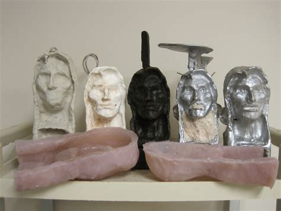
Additional sprues may be directed upward at intermediate positions, and various vents may also be added where gases could be trapped. (If you are not careful, it would look like tiny air ball or bubbles were in the casting.)
With this completed, the complete wax structure (and core, if previously added) is then invested in another kind of mold or shell, which is heated in a kiln until the wax runs out and all free moisture is removed. The investment is then soon filled with molten bronze. The removal of all wax and moisture prevents the liquid metal from being explosively ejected from the mold by steam and vapor.
Students of bronze casting will usually work in direct wax, where the model is made in wax, possibly formed over a core, or with a core cast in place, if the piece is to be hollow. If no mold is made and the casting process fails, the artwork will also be lost.
After the metal has cooled, the external ceramic/clay is chipped away, revealing an image of the wax form, including core pins, sprues, vents, and risers. All of these are removed with a saw and tool marks are polished away, and interior core material is removed to reduce the likelihood of interior corrosion. Incomplete voids created by gas pockets or investment inclusions are then corrected by welding and carving. Small defects where sprues and vents were attached are filed or ground down and polished.
In the case of the bell, it is obvious that this was done, as the cutting and filing marks are clearly visible on the “arms” of the figurine.
What this tells us is a interesting third point;
The bell was made by someone who had previously worked with bronze investment casting processes to some degree of proficiency.
Bell Clapper and Link
The bell clapper also indicates some rather interesting features as well. While the weighed ball is missing, the linkage is intact and indicates that a wire was NOT utilized to hold the ball in place. Instead, a specially designed link was used. That implies that wire, string or metal cords were not drawn and available at the time of manufacture. Instead, the link was formed by pouring the liquid metal into a long rectangular slot. Then allowed to cool, finally bent into the twisted shape shown.
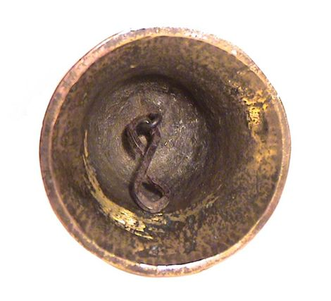
The reader should note that the hook, which holds the link, is not in the center of the bell, but rather off to the side. The significance of this is unknown, but does seem to lend a degree of credence towards post molding assembly and the possibility of repair over long periods of utilization.
Considerations in Mold Fabrication
The reader should also take particular note to the overall construction of the figurine. While the bell, and handle were apparently molded from a clay mold, the figurine was not. It was apparently ground by file or abrasion into the shape that it was found in. No eyes were molded. No mouth was cast. Instead these facial features were filed off to the shape that it was found as.
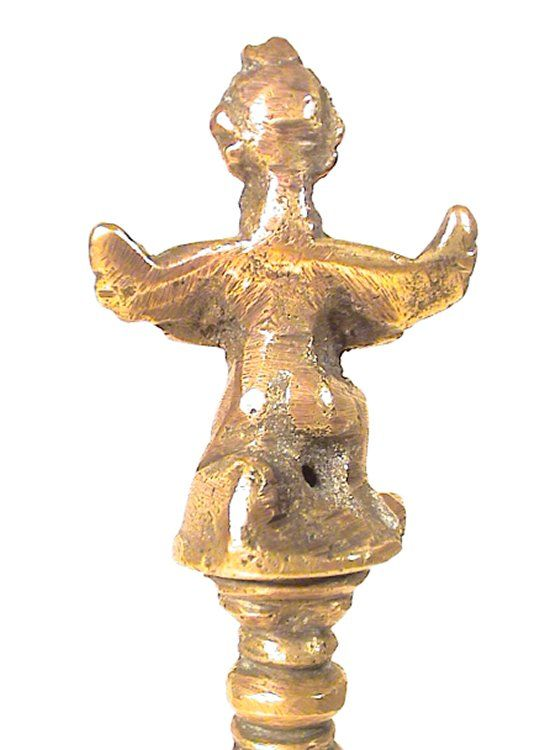
Finally, while it is difficult to make out, the figurine wears a hat, or has it’s hair in a style at the top of it’s head. Further it’s face seems to possess facial features more resembling a beak or a pointy face rather than any kind of nose. These are curious features, and not without their own mysteries.
Material Composition
This strange and unique object stayed in the Anderson family for many years, until it was eventually purchased by another organization. The organization that purchased it was The Institute for Creation Research. They are an organization that searches for inquiry towards and support for creationism; the belief that humans are a product of the divine.
The Institute for Creation Research
Investigators for the organization had the bell submitted to the lab at the University of Oklahoma. There a nuclear activation analysis revealed that the bell contains an unusual mix of metals, different from any known modern alloy production (including copper, zinc, tin, arsenic, iodine, and selenium).
An unusual mixture tells us many things. Firstly, that this object was not made or cast from contemporaneous raw materials.
Secondly, that the object probably was cast from either a formula that had no known conventional human analog, or was cast by amateurs using whatever materials those they had on hand. (I tend to believe the second theory.) Given the construction, shape and appearance, it seems to be an early casting; one suggestive of a society in the early throes of metallurgy.
Manufacture
This object consists of three components. They are;
- The bell
- The link
- The clapper
The bell was cast from a mold. The mold was made from a model that was turned on a lathe or formed on a pottery wheel. The details on the figurine on the handle was obtained by filing, clawing or other related abrasive activity.
The link was made out of a sheet of bronze. Long thin strips were cut out of the sheet. These strips were then bent into the necessary shape to form the link.
The clapper is missing. It is unknown what has happened to it.
Implications of Use & Purpose
Assuming that the dating methodology is correct, and that this object is exactly as it appears to be, what does that tell us? It tells us that intelligent, tool-forming humanoids, existed during the carboniferous period.
It tells us that they carved an image of what appears to be a winged bird with a beak onto a bell. Since we know that birds did not exist at the time of the manufacture of the bell, that the image is more likely that of a flying insect with a pointy shaped face.
Given the purpose and utility of a bell, one must assume that it is used to call, or signal for some purpose.
The construction techniques used implies an early metal working culture that was capable of pottery, molds, smelting, and blacksmithing. They possessed “bronze age” technology.
We believe that the creatures were of small stature, and given the time period, existing during the time of great lush forests and great diversification of life. (Compare the hand hilt on the bell. It is designed to fit a much smaller hand. Perhaps the hand of a person the size of a small juvenile female.)
One can easily imagine entire communities of individuals that (perhaps) farmed and were more agrarian in nature. There is really not much of need for hunter / gatherers to possess a bell make pottery, mine ores, smelt, or call groups of individuals together. Thus, one can imagine small communities connected by diminutive roads or trails in the dense lush forests. All of whom existed at this time in the area now known as West Virginia.
I posit that the remains of these communities; those which possessed metal fabrication technology, and whom farmed the land in the Carboniferous period now lie buried deep inside the earth. To discover them, one must dig down deep, deep inside the bowls of the earth.
Impossibilities
These points must be made clear to the reader. During the Carboniferous period were numerous humanoid communities. None of them were Homo Saipan. We did not evolve until 300 million years later (give or take 25,000 years). These communities evolved over time and thus the archeological records would transcribe various technological levels to the communities. We, for example, might discover primitive hand tools, pre-industrial metal fabrications, and industrial technology all within a one million year stratum. Indeed, that is identically what future archeologists would see of humankind. That is what we view today when we unearth the ruins and remains from the Carboniferous period.
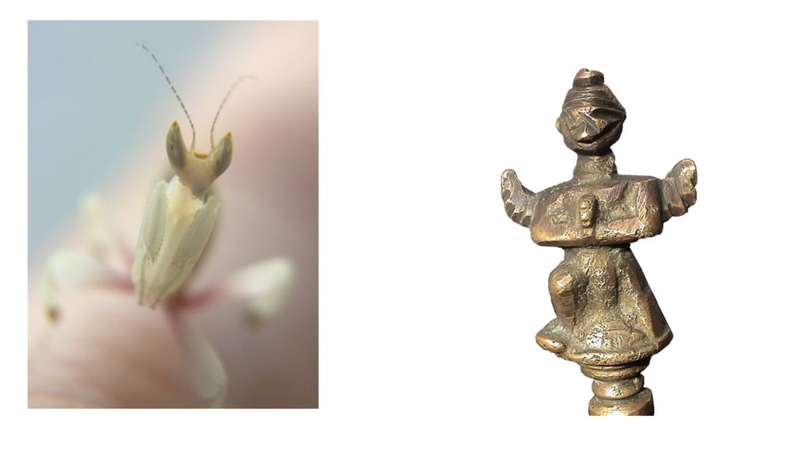
Resembles the Mantidae
The image as depicted on the bell handle resembles an insect that we commonly refer to as Mantises. Contemporaneously, they are distributed worldwide in temperate and tropical habitats. They have triangular heads with bulging eyes supported on flexible necks. Their elongated bodies may or may not have wings, but all Mantodea have forelegs that are greatly enlarged and adapted for catching and gripping prey; their upright posture, while remaining stationary with forearms folded, has led to the common name praying mantis.
A triangular head is quite evident on the creature that is depicted on the bell handle.
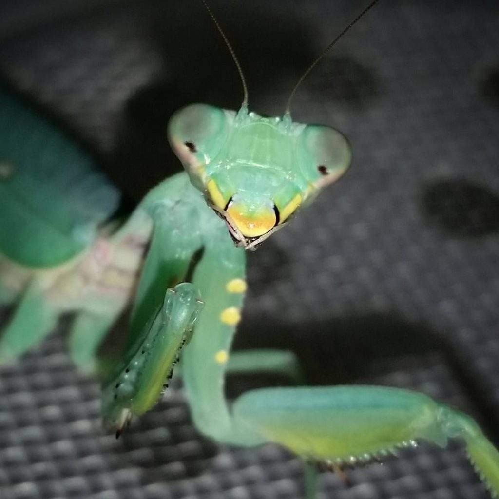
Of course, the question must be asked why would anyone want to depict a small insect; a mantis like creature, wearing a robe, with wings outstretched, and hands in prayer. Unless that creature is man-sized, much larger than what we see around us today.
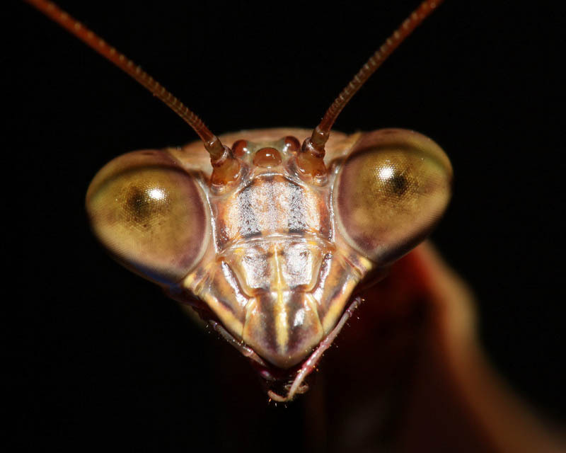
Could, for what ever reason, the bell handle represent a large Mantid or insect resembling a Mantis? If so, why would it be depicted praying with clasped arms, spread out wings, on a knee, and wearing a robe? Could this bell represent a time substantially different from what we know of today; one where the insects are the dominant species?
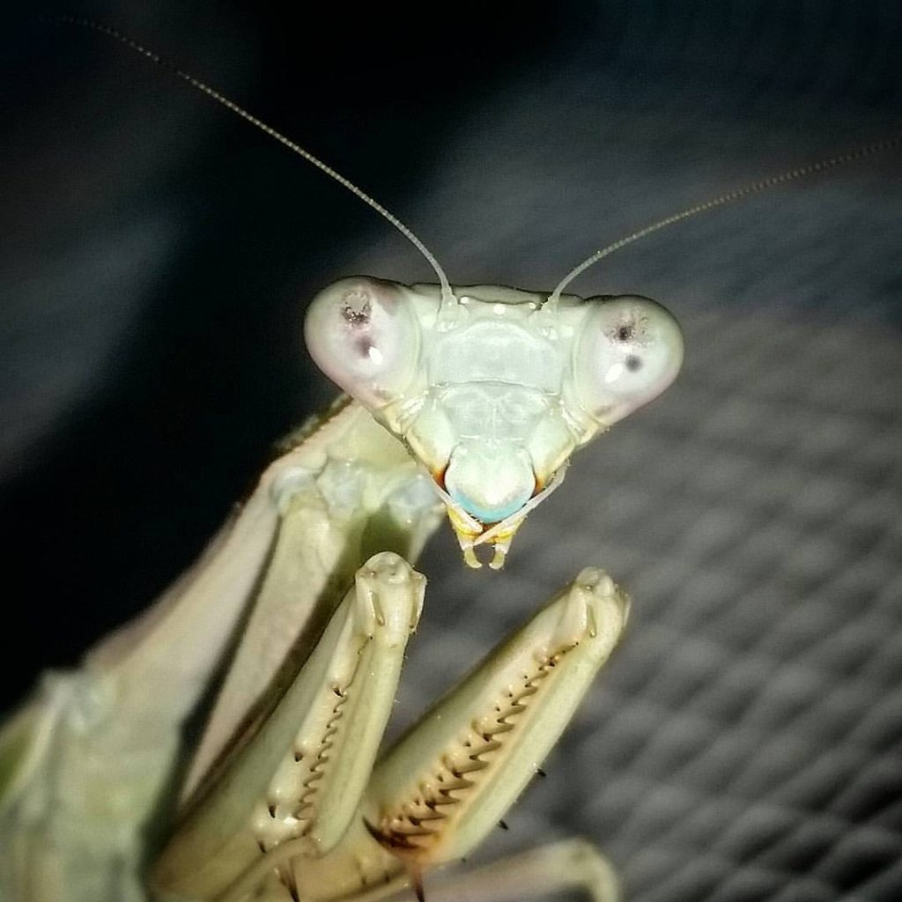
Could this be a Hoax?
Yes it could. That is always a possibility. If it is, then we must accept the idea that a ten year old boy constructed his bell himself, and for whatever reason chose not to announce to his parents that he made the bell himself. Instead he wanted to create a hoax.
DIY
Making your own parts is a fantastic DIY project. Nothing lasts like metal or stone does. Why not make a small statue for your friends? Heck, you can get a Barbie doll, or another doll-body and use that as your base object.
I would suggest an introductory kit for starters. Go to “Create a Cast” and make your own.
I like this kit because you design the sculpture at home, and mail it to them using the postage provided for in the kit. They then use their foundry to make your work of art. Pretty cool, huh?
Now, once you made one of two castings, and maybe you want to start doing the entire process yourself by investing in a furnace and the like, you can do so. But remember, you need to start somewhere. Here is a great starting point.
Takeaways
- A brass hand-bell was found within a block of coal.
- The only way that any item can be encased within coal is if it was placed there while the coal was still soft and wet organic material.
- This dates the object to 300 million years ago.
- Humans did not exist until around 25,000 years ago, and historic humans, not until 6,000 years ago.
- Thus this item is an OOPART. It is an intelligently produced object that predates mankind.
FAQ
Q: What is the OOPART bronze bell?
A: It is a hand-bell, made out of bronze, that was found within a block of coal in 1944. It is considered an OOPART because the manufacture of the bell predates mankind.
Q: What does the figurine tell us?
A: That the user of the bell placed some sort of significance on a winged (flying) creature that had a beak or triangular face, and possessed human-like attributes such as wearing clothing, kneeling, and clasping hands.
Q: Why is this important?
A: The acceptance of the age of this object strongly implies that a technological civilization existed on the earth 300 million years ago. This civilization might have had arms, legs, and other human attributes, but it was NOT human.
Q: If this bell was the product of an intelligent non-human race, 300 million years ago, then where are they now?
A: The human species has only been around for 25,000 years, and of that, only 6,000 years has been part of our recorded history. Proto-humans date back as far as 300,000 years. Thus we could argue that entire civilizations can come and go, replete with their proto-evolutionary forms at least three times (3x) every million years. If this is indeed the case, then we could theoretically have 300 x 3 = 900 separate intelligent non-human civilization develop independently on the earth long before we (as humans) ever gained sentience.
Q: Why are bells, especially hand-bells, made?
A: Typically, bells, especially hand-bells, are used to call and announce things. Secondary uses include religious gatherings and as musical instruments.
Q: Will we ever know the true story behind this OOPART object?
A: We probably will not ever know. However, that is just fine. Sometimes the purpose of an object is to create a mystery for us to follow and learn from. Personally, I would really welcome someone gifted with Psychometry to provide us some insight into this object.
MAJestic Related Posts – Training
These are posts and articles that revolve around how I was recruited for MAJestic and my training. Also discussed is the nature of secret programs. I really do not know why the organization was kept so secret. It really wasn’t because of any kind of military concern, and the technologies were way too involved for any kind of information transfer. The only conclusion that I can come to is that we were obligated to maintain secrecy at the behalf of our extraterrestrial benefactors.


MAJestic Related Posts – Our Universe
These particular posts are concerned about the universe that we are all part of. Being entangled as I was, and involved in the crazy things that I was, I was given some insight. This insight wasn’t anything super special. Rather it offered me perception along with advantage. Here, I try to impart some of that knowledge through discussion.
Enjoy.


MAJestic Related Posts – World-Line Travel
These posts are related to “reality slides”. Other more common terms are “world-line travel”, or the MWI. What people fail to grasp is that when a person has the ability to slide into a different reality (pass into a different world-line), they are able to “touch” Heaven to some extent. Here are posts that cover this topic.


John Titor Related Posts
Another person, collectively known by the identity of “John Titor” claimed to utilize world-line (MWI egress) travel to collect artifacts from the past. He is an interesting subject to discuss. Here we have multiple posts in this regard.
They are;